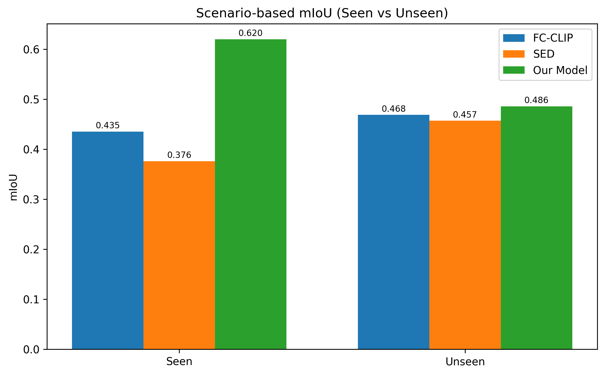
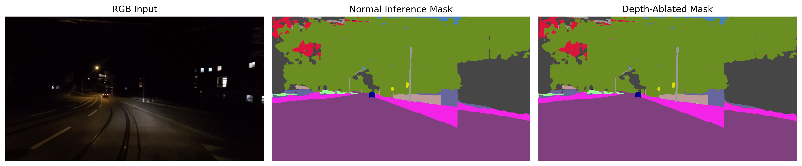
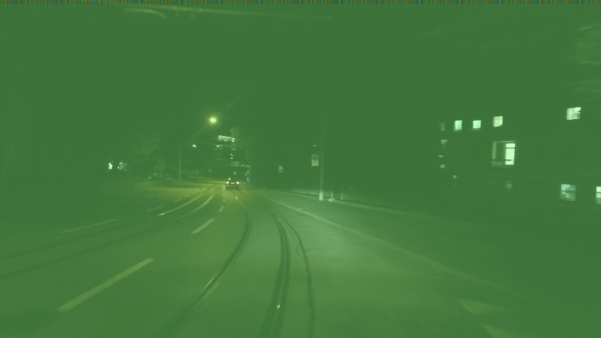

Results
1 · Scenario-based mIoU
50 adverse-condition frames per model. We split the 19 Cityscapes classes into Seen (trainId 0–9:
road, sidewalk, building, wall, fence, pole, traffic light, traffic sign, vegetation, terrain) and Unseen
(trainId 10–18: sky, person, rider, car, truck, bus, train, motorcycle, bicycle).
| Scenario | FC-CLIP | SED | Ours |
|---|---|---|---|
| Seen (trainId 0–9) | 0.435 | 0.376 | 0.620 |
| Unseen (trainId 10–18) | 0.468 | 0.457 | 0.486 |
| Average | 0.452 | 0.417 | 0.553 |

The Seen-class margin is large (+0.185 over FC-CLIP, +0.244 over SED) because ground-plane / wall geometry is exactly where depth helps when contrast collapses. On Unseen classes the margin is small but consistent (+0.018 over FC-CLIP) — depth is a structure prior, not a recognition prior, so it does not push the frontier on objects whose shape (not geometry) is the dominant cue.
2 · Qualitative comparison (1×5)
Columns: RGB · Ground Truth · FC-CLIP · SED · Ours. All masks use the Cityscapes color palette.

Two patterns are worth calling out. First, in nighttime frames both baselines suffer boundary bleed along the road–sidewalk transition; our model's fused depth keeps the ground plane consistent. Second, in rain/fog frames where long-range structure is washed out, the baselines tend to collapse large regions onto a single background class (sky or vegetation), while our model retains the road–vegetation–building partition because depth disambiguates it.
3 · Zero-tensor depth ablation
At inference time we monkey-patch the depth-fusion step to replace $D_\ell$ with
torch.zeros_like(depth_features), leaving everything else untouched. The model is forced to
produce a mask using only the frozen visual stream plus the CMPE/decoder — the depth signal is surgically
severed.

Differences appear at the road/sidewalk boundary, in road markings, and along vertical structures (poles, signs). This is a pseudo-ablation: we do not retrain without depth, so the surviving weights were never adapted to live without it. The degradation is therefore an upper bound on the depth branch's contribution — but it is the cleanest white-box evidence that the model actually uses its geometric prior.
4 · Cross-attention response visualization
A forward hook on the decoder's cross-attention submodule captures the output activation; we normalize, reshape
into an $H\times W$ heatmap, colorize with COLORMAP_JET, and blend onto the RGB input.

Honesty note. What we capture is the output activation of the cross-attention submodule, not the softmax-normalized attention tensor; the reshape is heuristic. The most we can claim is that the decoder's cross-attention produces a spatially non-trivial response that broadly follows scene structure — not per-class grounding.